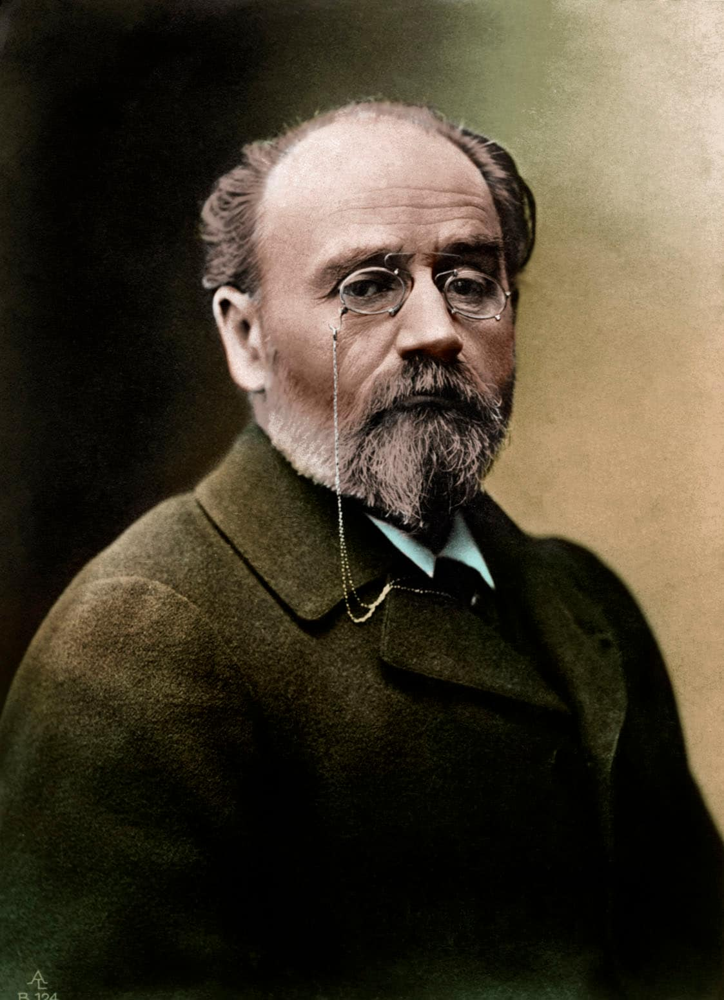

Zola et l'affaire Dreyfus

Émile Zola est un écrivain et journaliste français, qui a soutenu Dreyfus, un capitaine d’origine juive qui a été accusé d'espionnage militaire.
En 1894, la femme de ménage de l’Ambassade français découvre le “Bordereau”, un ensemble des documents militaires secrets à trasmettre à l’Ambassade allemande.
La guerre franco-prussienne vient de se terminer et en France il y a une grande crise économique et politique qui crée un sentiment d'haine envers les allemands. Donc, il faut trouver un coupable et le capitaine Dreyfus est l’idéal, car il est alsacien, il parle allemand et il a accès à des documents secrets en tant que militaire.
L'accusation de Dreyfus est le début d'une campagne d'antisemitisme qui va se propager à toute la France. Deux factions naissent dans l'opinion publique: les dreyfusards et les anti-dreyfusards. Beaucoup d'intellectuels s'engagent pour déclarer l'innocence de Dreyfus.
En 1896, le colonel Picquart identifie le véritable auteur du bordereau, qui est l’officier Esterhazy; successivement, l’accusateur principal de Dreyfus, le colonel Henry, est démasqué et se suicide, tandis que Dreyfus est gracié et libéré en 1899.
Le 13 janvier 1898, Zola fait publier à la une du journal L’Aurore sa lettre à le Président de la République, M. Félix Faure, où il accuse l’erreur judiciaire avec un ton critique.
Le but de Zola est de declencher un procès contre lui-mêne pour que l'affaire Dreyfuse ne soit pas classé; en fait il doit payer de l’argent et il s’exile en Angleterre, où il mourra en maniere mystérieuse.
Il s’agit d’une question très importante car elle fait comprendre que l’antisémitisme était présent en Europe déjà avant l’avènement du nazisme; de plus, on parle de violations des droits de l’homme et des valeurs de la république.
Les déclarations des droits de l’homme
- Virginia Bill of Rights (1776)
- Déclaration des droits de l’homme et du citoyen (1789)
- Charte des Nations Unis (1945)
- Déclaration universelle des droits de l’homme (1948)